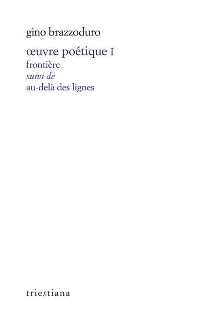

Gino Brazzoduro, Œuvre poétique I
Né à Fiume, Gino Brazzoduro (1925-1989) est un poète des confins et de leurs modulations de lumière. Dans cette ville nouvellement italienne en 1924, et qui reviendra à la Yougoslavie, puis à la Croatie, sous le nom de Rijeka, il fait l’expérience de la lacération tragique et des barbelés de mort que déroule l’Histoire, avant de connaître l’exil. Des frontières, intimes, passent aussi en chacun de nous, traversent les consciences et, dans une soif de liberté, en appellent à l’ouverture, à la rencontre de l’autre. Par ses vers limpides, brefs, d’une transparente beauté, Gino Brazzoduro façonne un authentique livre d’hospitalité.
Date de parution : novembre 2023
Traduit du triestin par Laurent Feneyrou et Pietro Milli
Préface de Pericle Camuffo
320 pages
Prix : 22€